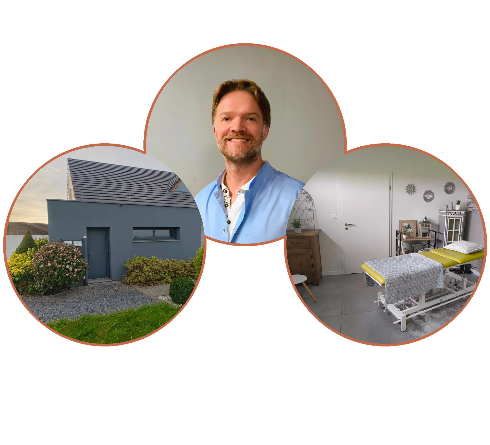

Cabinet de Hénin-Beaumont
288 rue Léon Pruvost, 62110 Hénin-Beaumont
Du lundi au vendredi, hors jours fériés, de 9 h à 19 h, sur rendez-vous.
Consultation : 60 €
Facture remise pour votre mutuelle.

Ostéopathe D.O., Masseur-Kinésithérapeute, Master STAPS. 22 ans d'expérience en expertise biomécanique & examen clinique. Cabinets à Hénin-Beaumont & Dourges.
Christophe Bonnet n’a pas de cabinet à Liévin. Les consultations ont lieu à Hénin-Beaumont et à Dourges.
Vous résidez à Liévin et souhaitez prendre rendez-vous avec Christophe Bonnet ? Mon activité d’ostéopathe s’appuie sur une formation en ostéopathie, kinésithérapie et sciences du sport. Je vous accueille à Hénin-Beaumont ou à Dourges.
288 rue Léon Pruvost, 62110 Hénin-Beaumont
Du lundi au vendredi, hors jours fériés, de 9 h à 19 h, sur rendez-vous.
Consultation : 60 €
Facture remise pour votre mutuelle.
44 chemin du Puits, 62119 Dourges
Le samedi, le dimanche et les jours fériés, de 9 h à 19 h, sur rendez-vous.
Consultation : 80 €
Facture remise pour votre mutuelle.
Les rendez-vous sont proposés selon les disponibilités du calendrier choisi. Prise en charge et honoraires →
Ostéopathe D.O., Masseur-Kinésithérapeute et diplômé d’un Master STAPS. 22 ans d’expérience en expertise biomécanique et examen clinique.
Institut Franco-Britannique d’Ostéopathie et Institut Supérieur d’Ostéopathie du Grand Montpellier.
Université Libre de Bruxelles.
Université Nice Sophia Antipolis — sciences du sport.
Calonne et les Marichelles sont deux quartiers de Liévin. Vous pouvez les préciser comme point de départ ; les informations locales Tadao sont également accessibles ci-dessous.